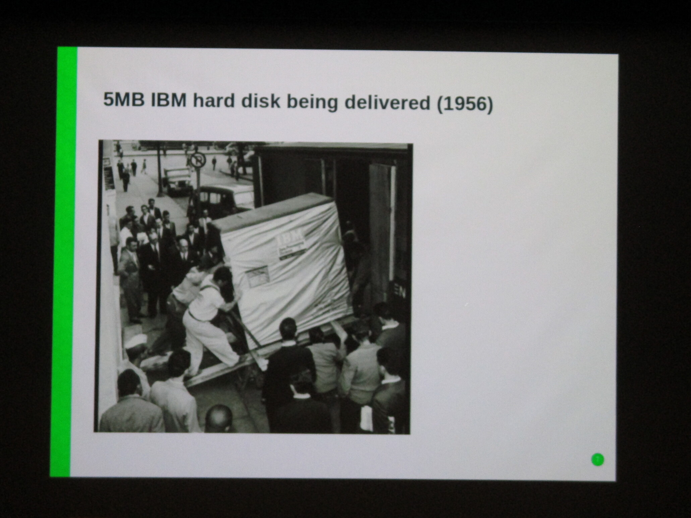

I attended FOSDEM in Brussels on February 1st and 2nd, last weekend. It was pretty overwhelming, the amount of people throughout the ULB campus. The number of people attending is around 8,000, and at this conference, there are 30 different talks going on at any one time.
Even after reading the How to survive FOSDEM guide before my trip, I still felt under prepared when I got there.
In the K building there were booths for a bunch of Linux distros and different software projects. At the end was a booth for 0 A.D., a strategy game I've never played but might try soon. If I go again next year, I'm definitely going to prepare more, have specific things I want to work on or find out about, and I'll also know what to expect. In the closing keynote, it was mentioned that one of the main draws of FOSDEM now is the devrooms, which is a whole other aspect of the conference that I didn't explore. I'm not sure if these are more hackathons or focused project-based talks, but if I return next year I'll find out.

Here's an overview of some of the talks I took notes on, with links to the recordings.
Over Twenty Years Of Automation - James Shubin
The creator of mgmtconfig describes the history of configuration management. He gives demos for many different systems, including a simple shell scripting + ssh combo, puppet, chef, ansible, docker, and others. He doesn't mention Salt, but it seems really similar to Ansible. They're both based on Python and YAML.
The future of config management? According to James, it's a "choreography" model instead of orchestration. Instead of a salt master, every node would follow its own algorithm and know how to take care of itself, while still being aware of all nodes around it. The downside here is that implemention, debugging, and everything, can be more complicated.
He makes a point to note that docker and kubernetes are not configuration management systems.
His own project, mgmtconfig, is like salt, but changes are updated immediately instead of through a periodic highstate. He describes it as "reactive".
Blender, Coming of Age - Ton Roosendaal
This is a talk about the origins of the Blender project, by its founder. He goes through the whole history, from before Blender existed in the 90s, to how they sustain their business now, with a bunch of film and graphics demos demonstrating how advanced their rendering systems have become.


The Hidden Early History of Unix - Warner Losh
The speaker goes through the history of Unix and uncovers some nearly forgotten details.
Columbia University was mentioned as the first university to receive Unix from Bell Labs in the 1970s.
Generation Gaps - Liam Proven
The speaker goes through the history of operating systems, how and when we've seen fundamental changes. Software advancements have always followed hardware changes, and usually when something about the hardware is removed, or the computer "gets worse", or simpler.
"We now have computers based on 70s workstation technology ... You can go with 40 years of accumulated baggage from the IBM PC (Windows 1), or, you can go with Unix and have 50 years of accumulated baggage!" We now have incredibly complex operating systems that no one really understands. But hey, they get the job done, we've fixed most of the bugs, and we'll just keep adding more and more fixes and incremental improvements.
Liam thinks that the next major change in computing (i.e., the next piece of hardware to be removed) is the hard drive. With new RAM designs, we can design an operating system entirely in memory - no disk swapping, no file systems. No need for boot loader, or even init or and shutdown scripts. Just turn the computer off, and turn it back on, and it's running just as it left off, everything in memory. That could really change how we think about software.
In this talk, Liam mentions The Future of Programming, a talk by Bret Victor in 2013, made from the perspective of 1973, complete with an old-fashioned slide deck and a pocket protector.
HTTP/3 for everyone - Daniel Stenberg
This talk was completely packed, in the main J auditorium. I'm not sure why. The author of curl describes making a new, faster HTTP protocol based on UDP instead of TCP.
I saw some interesting talks, but there's at least as much info to dig through in the video recordings for all the talks, here: https://video.fosdem.org/2020/ (These are organized by room number.. the title/speaker info for each talk can be found here). These talks will all be available here on YouTube eventually, but that's going to take a while.
Here are some talks that I missed, but I still want to watch, so I'm making notes for myself.
The Linux Kernel: We have to finish this thing one day ;) - Thorsten Leemhuis
I found the closing keynotes underwhelming, but I missed this opening keynote - I had just arrived at ULB, was kind of lost, and the main auditorium (J) was overflowing with people.
Reinventing Home Directories - Lennart Poettering
The systemd creator continues to cause controversy and annoy Unix traditionalists. This talk was completely overflowed with people, even outside the door, with both fans and critics, waiting to talk to Lennart about his ideas. In this talk he describes his latest idea, to handle home directories with systemd in a more self-contained way: systemd-homed. The first thought that comes to my mind is... why??? I'll just have to watch the talk.
Python and JavaScript dev rooms
And here are just some random photos from around the conference.
FOSDEM's special beer, with a Belgian beer Cuvée des Trolls.


And finally one of my favorite images from the weekend: people dressed up in VLC logos.